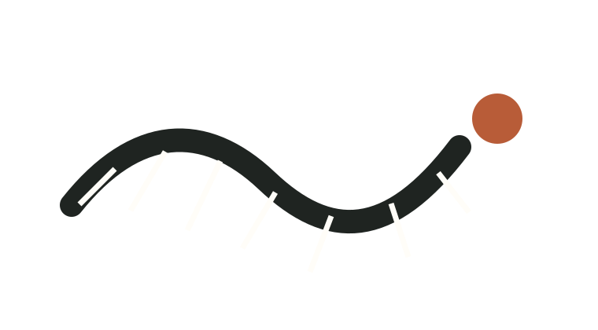
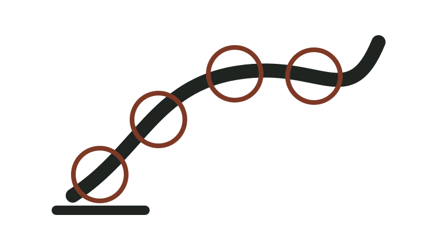
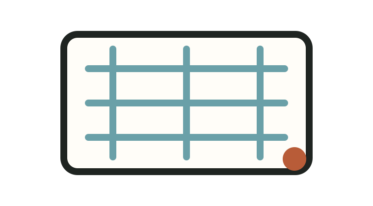
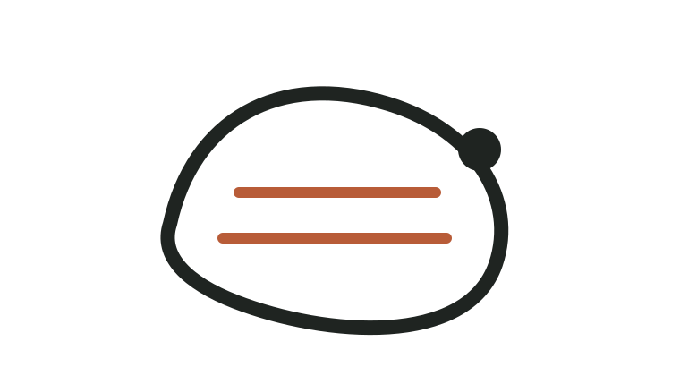
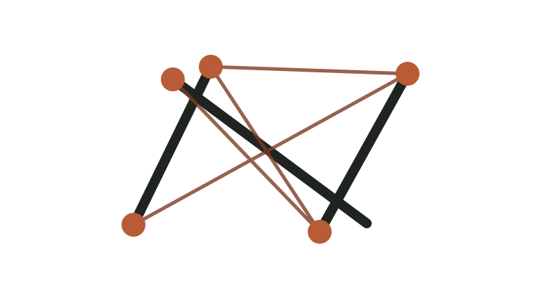
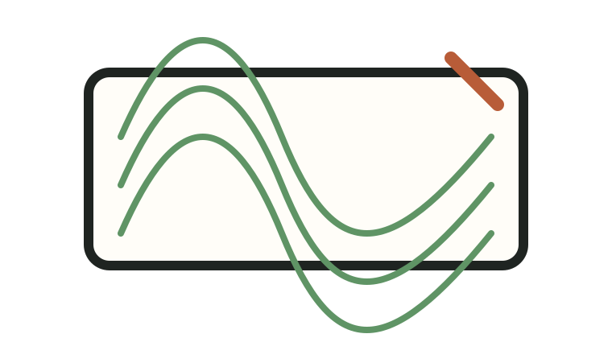

Soft Robotics · SDU
Kirigami-based snake-inspired soft robot
DIW conductive circuits, flexible sensing, and kirigami actuator architecture for limbless locomotion studies.
Mechanical Engineering · Soft Robotics · Bio-inspired Design
I’m Emiliano, an incoming Mechanical Engineering PhD student at UT Austin working across soft robotics, sensing, kirigami structures, continuum mechanisms, and product design.
Research & Projects
I’m especially interested in soft robotic systems that can sense, adapt, and interact safely with people or unstructured environments. This portfolio is organized like a project gallery: each card can become a deeper case study with images, prototypes, results, and design reflections.

Soft Robotics · SDU
DIW conductive circuits, flexible sensing, and kirigami actuator architecture for limbless locomotion studies.

Tendon-driven Robotics
A two-stage continuum mechanism using tendon routing to reduce actuation effort and improve stiffness.

Smart Materials · Harvard SEAS
Liquid-flow modules for optical and thermal tuning, including material characterization and thermal testing.

Product Design · Apple VPG
Manufacturing experiments, ergonomic prototypes, topology optimization, and reliability-focused design work.

Compliant Mechanisms
Layer-jamming and tendon/spring architectures for deployable, compliant robotic structures.

Digital Fabrication
Custom G-code workflows for conductive circuit printing on flat, cylindrical, and dome-like soft surfaces.
About
I work at the intersection of mechanical design, fabrication, and experimental research. My background includes soft robotics research at SDU, Harvard SEAS REU work on smart fluidic structures, continuum robotics at Cal Poly, and product design engineering experience at Apple and Formlabs.